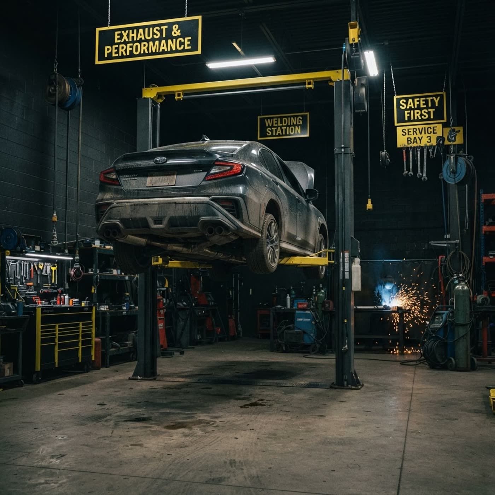

Ревёт под днищем? Пахнет выхлопом в салоне? Восстановим от 50 BYN
Ремонт выхлопной системы и глушителей: сварка, замена гофр, диагностика. Определим причину по звуку за полчаса и скажем честно — что чинить, а что менять.
Схема выхлопного тракта: нажмите на узел
Пять узлов, где чаще всего появляются дыры и гул. Кликните — узнаете, что там ломается и как мы это чиним.
Коллектор
Прогар прокладки и трещины — характерный «стрекот» на холодную. Снимаем, завариваем или меняем на новый.
Узнайте свою проблему по звуку и запаху
Клиент приходит не за «ремонтом выхлопа», а за тишиной и свежим воздухом в салоне. Слева — что вы замечаете, справа — что это значит и сколько стоит.
Цены — без «придём — посмотрим»
Столько стоит работа в Старобине. Запчасти — по факту: гофры и глушители привозим под заказ, скажем цену до начала работ.
Четыре шага — и машина молчит
Осмотр на подъёмнике
Загоняем машину, прослушиваем тракт, показываем вам дыру или гофру лично.
Честный вердикт
Сразу говорим: заварим, поставим б/у или новое. Запчасть под заказ — с ценой до начала работ.
Сварка и замена
Глушители и гофры — в тот же день. Сварочные работы любой сложности по кузову и тракту.
Проверка на дым и звук
Заводим, газуем, слушаем. Вы забираете тихую машину и гарантию на шов.
Что спрашивают перед приездом
Весь глушитель менять будете?
Запчасти есть у вас или искать самому?
Вы берёте только выхлоп или полностью обслуживаете?
Машину вести к вам в Старобин или приедете сами?
Даёте ли гарантию на работу?
Опишите проблему — перезвоним и назовём цену
Или звоните сразу: +375 33 393-60-80 — скажем, сколько будет стоить именно ваш случай.
ИП Голубев Андрей Николаевич · УНП 693403237 · ГСК «Магнат», Молодёжная ул., 13, Старобин · Солигорский район